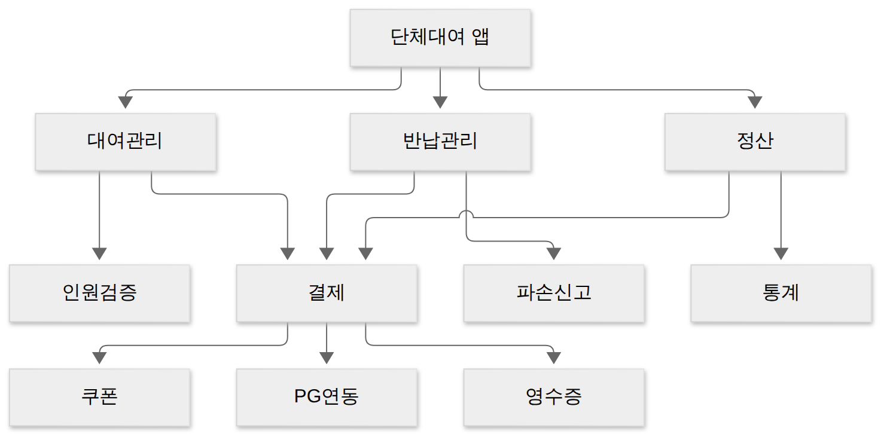

R07 · 재사용과 공통 모듈 — 모듈을 어떻게 나누고, 잘 나눴는지 결합도·응집도·팬인/팬아웃으로 재기
1과목 리뉴얼A3 리뉴얼 일곱째 장부터 책 3장 애플리케이션 설계로 들어가요. 2장(R06)에서 사용자가 만질 화면을 그렸다면, 3장은 그 화면 뒤에서 돌아갈 코드의 뼈대를 정하는 장이에요. 오늘은 그 첫 절인 재사용과 공통 모듈이에요. 모듈화 · 재사용 · 팬인/팬아웃 묶음은 최근 20회 시험에 한 번도 빠짐없이 나왔고, 결합도는 20회 중 19회, 응집도는 16회 나왔어요. 1과목에서 가장 확실한 점수 창고예요.
- 재사용의 뜻과 세 가지 유형(함수 · 객체 / 컴포넌트 / 애플리케이션), 합성 중심과 생성 중심을 구별할 수 있다
- 모듈 · 공통 모듈 · 컴포넌트의 차이와 공통 모듈 명세 원칙 다섯 가지(정확성 · 명확성 · 완전성 · 일관성 · 추적성)를 단서로 구별할 수 있다
- 모듈화의 뜻과 루틴 기법, 모듈 개수와 비용의 관계, 바람직한 모듈 설계 방안과 틀린 선지를 가려낼 수 있다
- 응집도 일곱 가지(약 → 강)와 결합도 여섯 가지(강 → 약)를 순서와 정의로 구별하고, 팬인 · 팬아웃을 구조도에서 셀 수 있다
⓪ 큰 그림 — 3,000줄짜리 함수 하나
R06에서 씽씽 2.0 팀은 단체 대여(REQ-031, 최대 20명) 화면을 프로토타입까지 만들었어요. 스프린트 5에서 화면 뒤 코드를 열어 보니, 인턴이 급하게 짠 rentGroup() 함수 하나에 인원 검증 · 요금 계산 · 결제 · 알림 코드가 3,000줄로 뭉쳐 있었어요. 3,000줄 함수는 읽는 사람보다 스크롤바가 먼저 지쳐요. 요금 규칙 한 줄을 고쳤더니 알림 문자가 안 가는 일까지 생겼죠.
팀장은 세 가지 질문을 던졌어요. 첫째, 이미 개인 대여에서 검증된 결제 · 쿠폰 코드를 다시 쓸 수 없나(재사용). 둘째, 이 덩어리를 어떤 단위로 쪼갤까(모듈, 공통 모듈, 모듈화). 셋째, 쪼갠 결과가 잘 쪼갠 건지 무엇으로 재나(응집도 · 결합도 · 팬인/팬아웃). 이 세 질문의 순서가 책 3.1의 순서이고, 오늘 페이지의 순서예요.
① 재사용 — 바퀴를 다시 발명하지 않기 모듈화·재사용 묶음 기출 20회
정의: 재사용(Reuse)은 예전에 만들어 써 보면서 검증된 기능을 파악하고, 새 시스템에 맞게 다시 구성해 쓰는 일이에요. 기존 소프트웨어뿐 아니라 그것을 만들며 쌓은 지식(설계 · 문서 · 노하우)까지 활용하는 것을 포함해요. 왜 필요할까요? 처음부터 새로 짜면 시간과 돈이 들고, 새 코드는 아직 버그를 덜 맞아 본 코드예요. 재사용은 남이 이미 밟아 보고 지뢰를 다 치운 길로 걷는 것과 같아요.
씽씽 팀에게 재사용 후보는 셋이었어요. 개인 대여에서 1년 넘게 쓴 쿠폰 할인 코드, 외부 결제 대행사가 준 결제 모듈, 그리고 그룹사의 회원 인증 서비스예요. 셋은 다시 쓰는 단위의 크기가 달라요. 그래서 책은 재사용을 세 가지 유형으로 나눠요.
재사용 유형 세 가지
함수 · 객체 재사용은 클래스나 함수 단위로 가져다 쓰는 방식이에요. 개인 대여의 Coupon 클래스와 calcDiscount() 함수를 단체 대여에서 그대로 불러 쓰는 경우예요. 단위가 작아 가져오기 쉽지만, 같은 언어 · 같은 코드베이스 안에서 주로 통해요.
컴포넌트 재사용은 독립적으로 만들어진 부품(컴포넌트)을 통째로 가져다 쓰되, 그 안이 어떻게 짜였는지는 모르고 인터페이스로만 주고받는 방식이에요. 결제 대행사의 SDK가 그래요. 팀은 SDK 속 코드를 한 줄도 보지 않고 pay() · refund() 같은 정해진 입구만 불러요. 컴포넌트를 바꿔 끼워도 인터페이스가 같으면 나머지 코드는 그대로예요.
애플리케이션 재사용은 공통 기능을 가진 응용 프로그램을 여러 시스템이 함께 쓰는 방식이에요. 씽씽 앱, 그룹사의 배달 앱, 쇼핑 앱이 회원 가입 · 로그인을 각자 만들지 않고 그룹 공통 인증 서비스 하나를 공유하는 경우예요. 단위가 가장 크고, 한 번 공유하면 여러 서비스가 같은 기능을 일관되게 써요.
| 유형 | 다시 쓰는 단위 | 씽씽 예 |
|---|---|---|
| 함수 · 객체 재사용 | 클래스 · 함수 | Coupon 클래스, calcDiscount() |
| 컴포넌트 재사용 | 독립 부품, 인터페이스로만 통신 | 결제 대행 SDK의 pay() |
| 애플리케이션 재사용 | 공통 기능을 가진 앱을 공유 | 그룹 공통 회원 인증 서비스 |
세 유형은 “어디까지를 한 덩어리로 다시 쓰나”로 나눈 것이라 재사용 범위에 따른 분류라고도 불러요. 함수 · 객체 → 컴포넌트 → 애플리케이션으로 갈수록 한 번에 가져오는 덩어리가 커져요. 시험은 이 세 이름 사이에 “더미 코드 재사용”처럼 그럴듯한 가짜 이름 하나를 끼워 “분류가 아닌 것”을 고르게 해요. 범위 분류는 딱 이 셋이라고 기억하면 가짜가 바로 보여요.
재사용 방법 — 합성 중심과 생성 중심
재사용을 어떻게 하느냐로도 둘로 나눠요. 합성 중심(Composition-based)은 미리 만들어 둔 부품(블록)을 레고처럼 끼워 맞춰 소프트웨어를 완성하는 방법이라 ‘블록 구성 방법’이라고도 불러요. 씽씽 팀이 쿠폰 클래스 + 결제 SDK + 인증 서비스를 조립하는 것이 합성 중심이에요. 생성 중심(Generation-based)은 부품 자체가 아니라 추상적으로 적어 둔 명세 · 패턴을 구체화해 새 코드를 만들어 내는 방법이라 ‘패턴 구성 방법’이라고도 해요. 코드 생성기에 “요금 규칙 표”를 넣으면 계산 코드가 나오는 식이에요.
모듈 · 컴포넌트, 무엇이 다른가
두 말이 자주 섞여요. 모듈은 설계 · 구현 단계에서 시스템을 기능 단위로 나눈 조각이에요. 소스 코드 안의 구조이고, 보통 함께 빌드 · 배포돼요. 컴포넌트는 독립적으로 배포 · 교체할 수 있는 실행 단위의 부품이고, 인터페이스를 통해서만 접근해요. 모듈이 “설계도 위의 방 나누기”라면, 컴포넌트는 “따로 사 와서 꽂는 가전제품”에 가까워요.
재사용이 주는 것, 주지 않는 것
재사용으로 얻는 것은 개발 생산성과 품질 향상, 개발 기간 · 비용 단축, 이미 검증된 코드를 쓰니 프로젝트 실패 위험 감소, 그리고 팀 간 지식 · 문서 공유예요. 반대로 재사용이 새로운 개발 방법론을 도입하기 쉽게 해 주지는 않아요. 기존 부품에 맞춰 개발하다 보면 오히려 예전 방식에 묶이기 쉬워요. 이 문장이 “재사용의 이점이 아닌 것”의 단골 정답이에요.
→ 이 장면의 결과물: 쿠폰 클래스와 결제 SDK는 다시 쓰기로 했어요. 그래서 다음 장면은 남은 단체 대여 코드를 어떤 단위로 나눌지예요.
② 모듈이란
재사용할 것을 골랐으니 이제 나머지를 쪼갤 단위가 필요해요. 정의: 모듈(Module)은 소프트웨어(또는 하드웨어)를 이루는 독립된 기능 단위예요. 시험에서는 같은 뜻으로 서브 프로그램, 서브루틴, 함수, 작업 단위 같은 말이 함께 나와요. 씽씽 팀이 rentGroup()에서 떼어 낼 validateHeadcount()(인원 검증)가 모듈 하나예요.
모듈이 왜 쓸모 있는지는 특징에서 보여요. 아래 표를 위에서부터 읽으면 “혼자 설 수 있으니 → 여러 조합이 되고 → 따로 컴파일 · 재사용이 되며 → 고쳐도 남에게 덜 번진다”로 이어져요.
| 특징 | 뜻 | 씽씽 예 |
|---|---|---|
| 독립성 | 다른 모듈에 기대지 않고 홀로 작성 · 실행될 수 있음. 독립성의 정도는 결합도 · 응집도로 잰다 | 인원 검증 모듈은 결제 코드 없이도 돌아간다 |
| 다양한 조합 | 모듈들을 여러 방식으로 조합해 하나의 소프트웨어를 구성 | 같은 인원 검증을 단체 대여 · 단체 반납에 조합 |
| 단독 컴파일 · 재사용 | 모듈 하나만 따로 컴파일할 수 있고, 다른 프로그램에서 다시 쓸 수 있음 | DateUtil만 따로 빌드해 정산 시스템에서도 씀 |
| 영향 최소화 | 한 모듈을 고쳐도 다른 모듈로 번지는 영향이 작음 | 요금 규칙을 고쳐도 알림 모듈은 그대로 |
| 고유한 이름 · 호출 가능 | 모듈마다 구별되는 이름이 있고, 다른 모듈이 그 이름으로 불러 쓸 수 있음 | validateHeadcount()를 대여 · 반납이 모두 호출 |
곁가지로 컴파일은 사람이 쓴 소스 코드를 기계가 실행할 수 있는 형태로 번역하는 일이에요. 단독 컴파일이 된다는 것은 “다른 모듈이 완성되지 않아도 이 모듈만 번역 · 시험해 볼 수 있다”는 뜻이고, 그래서 여러 사람이 동시에 개발할 수 있어요. 출제자는 이 표에서 한 글자만 뒤집어 놓고 기다려요. “모듈은 단독으로 컴파일할 수 없다”, “모듈은 다른 모듈에서 접근할 수 없다”가 그 뒤집힌 문장이에요.
→ 이 장면의 결과물: 쪼갤 단위(모듈)를 정했어요. 그런데 쪼개다 보니 요금 계산 · 날짜 계산은 대여에도 반납에도 정산에도 쓰여요. 다음 장면은 이렇게 여러 곳이 함께 쓰는 모듈이에요.
③ 공통 모듈과 명세 원칙 다섯 가지
정의: 공통 모듈은 특정 업무 하나가 아니라 여러 기능 · 프로그램이 공통으로 쓰는 기능을 모아 둔 모듈이에요. 스스로 컴파일되고, 어디서든 다시 쓸 수 있어요. 대표 예가 날짜 처리 유틸리티예요. 씽씽 팀은 대여 시작 · 반납 시각 계산, 공휴일 할증 판단을 DateUtil로, 기본요금 · 분당 요금 · 단체 할인 계산을 FareCalc로 뺐어요. 공통 모듈이 없으면 같은 날짜 계산이 대여 · 반납 · 정산 코드에 세 벌 생기고, 공휴일 규칙이 바뀔 때 세 군데를 다 고쳐야 해요.
공통 모듈은 여러 팀이 믿고 가져다 쓰는 물건이라, 무엇을 하는지 적은 명세서가 특히 중요해요. 책은 공통 모듈 명세를 쓸 때 지킬 원칙을 다섯 가지로 들어요. 씽씽 팀의 DateUtil 명세 리뷰 회의에서 나온 지적으로 하나씩 볼게요.
| 원칙 | 뜻 | DateUtil 리뷰에서 |
|---|---|---|
| 정확성 (Correctness) | 이 기능이 시스템에 왜 필요하고 무엇을 하는지 틀림없이 알 수 있게 적는다 | “rentalMinutes()가 반납 지연분까지 포함하는지 적혀 있어야 해요” |
| 명확성 (Clarity) | 누가 읽어도 한 가지 뜻으로만 읽히게 적는다(중의성 없음) | “‘하루 요금’의 하루가 24시간인지 달력 하루인지 정해 주세요” |
| 완전성 (Completeness) | 구현에 필요한 내용을 빠짐없이 적는다 | “자정을 넘겨 반납하는 경우 처리가 빠졌어요” |
| 일관성 (Consistency) | 다른 공통 기능과 서로 부딪치지 않게 적는다 | “FareCalc는 10원 단위 반올림인데 여기는 버림이에요. 맞춰야 해요” |
| 추적성 (Traceability) | 이 기능이 어느 요구사항에서 왔는지, 무엇과 연결되는지 따라갈 수 있게 적는다 | “공휴일 할증이 REQ-031의 어느 줄에서 나왔는지 번호를 달아 주세요” |
명확성을 어긴 명세는 읽는 사람 수만큼 버전이 생겨요. 기획자의 ‘하루’, 개발자의 ‘하루’, 고객센터의 ‘하루’가 다 달라지는 거죠. 추적성은 R05에서 요구사항 관리할 때 본 추적성과 같은 뜻이에요 — 출처를 거슬러 오를 수 있느냐예요.
직접 해 보기 — 어느 원칙을 어겼나? 다른 공통 모듈 PointUtil(포인트 적립)의 리뷰 코멘트예요. 오른쪽 칸을 가리고 먼저 말해 보세요.
| 리뷰 코멘트 | 원칙 |
|---|---|
“expireSoon()이 왜 생겼는지 어느 요청서에도 연결이 안 보여요” | 추적성 |
| “시간대(한국 시각 / 세계 표준시) 처리 규칙이 없어서 구현하다 멈췄어요” | 완전성 |
| “‘영업일’을 기획은 평일로, 운영은 공휴일 뺀 날로 읽었어요” | 명확성 |
“FareCalc는 원 단위, 여기는 포인트 단위를 쓰라고 해서 정산이 안 맞아요” | 일관성 |
| “이 함수가 무엇을 돌려주는지 설명이 실제 동작과 달라요” | 정확성 |
→ 이 장면의 결과물: 공통 모듈 두 개와 명세서가 생겼어요. 이제 나머지 3,000줄을 실제로 어떻게 나눌지, 즉 모듈화의 방법이 필요해요.
④ 모듈화 — 나누는 법과 알맞은 크기 모듈화·재사용 묶음 기출 20회
정의: 모듈화(Modularity)는 소프트웨어의 성능을 높이고 수정 · 재사용 · 유지보수를 쉽게 하려고 시스템을 모듈 단위로 나누는 설계 방법이에요. 나눌 때 쓰는 두 도구가 분해(큰 문제를 작은 문제로 쪼개기)와 추상화(세부를 감추고 핵심만 드러내기)예요.
추상화는 세 갈래로 나눠 불러요. 입력과 출력만 정하고 처리 과정은 함수 이름 뒤에 감추는 기능(과정) 추상화, 자료와 그 자료를 다루는 연산을 묶고 내부 표현은 감추는 자료 추상화, 복잡한 제어 흐름을 명령 하나로 감싸는 제어 추상화예요. FareCalc.calc(people, minutes)는 요금 공식을 몰라도 쓸 수 있으니 기능 추상화예요. 추상화와 정보 은닉은 R10(객체 지향)에서 자세히 다뤄요.
모듈화 기법 — 루틴 · 메인 루틴 · 서브루틴
코드 수준에서 모듈화는 루틴으로 해요. 루틴(Routine)은 어떤 기능을 하는 명령들의 묶음이에요. 메인 루틴은 프로그램 실행의 큰 흐름을 맡고, 필요할 때 서브루틴을 불러요. 서브루틴은 메인 루틴(또는 다른 루틴)이 필요할 때마다 불러 쓰는 루틴이에요. 씽씽 팀은 rentGroup()을 40줄짜리 메인 루틴으로 줄이고, 실제 일은 서브루틴 네 개가 하게 했어요.
몇 개로 나눌까 — 모듈 개수와 비용
그럼 많이 쪼갤수록 좋을까요? 모듈 수를 늘리면 모듈 하나의 크기는 작아지고, 모듈 하나를 만드는 개발 비용도 줄어요. 하지만 모듈끼리 주고받는 일(상호 교류)이 늘어나 서로 잇고 맞추는 통합 비용이 커지고, 지나치면 호출만 오가는 과부하가 생겨요. 반대로 너무 크게 나누면 통합은 쉽지만 모듈 하나가 무거워 개발 · 수정 비용이 커져요. 한 사람이 다 짊어진 팀(1개)과, 전달만 하다 하루가 끝나는 팀(40개) 사이 어딘가가 정답이에요.
두 비용을 더한 총비용은 가운데가 가장 낮아요. 그래서 모듈 크기는 “작을수록 좋다”가 아니라 “적당해야 한다”가 정답이에요. 씽씽 팀은 6~8개(메인 루틴 1 + 서브루틴 4 + 공통 모듈 2)로 정했어요.
바람직한 모듈 설계 방안
책이 정리한 좋은 모듈 설계의 지침은 결국 “독립적이고, 예측 가능하고, 다루기 쉬운 모듈”을 말해요. 씽씽 팀은 이 목록을 코드 리뷰 체크리스트로 썼어요.
| 지침 | 뜻 |
|---|---|
| 결합도는 낮추고 응집도는 높인다 | 모듈 독립성을 높이는 핵심(⑤에서 자세히) |
| 복잡도 · 중복성을 줄이고 일관성을 지킨다 | 같은 코드를 여러 벌 두지 않고 인터페이스 모양을 통일 |
| 기능은 예측 가능하게, 지나치게 제한하지 않게 | 이름만 봐도 무엇을 하는지 알고, 쓸 데가 한 곳뿐일 만큼 좁히지 않음 |
| 적당한 크기로 나눈다 | 그림 4의 최소 비용 영역 |
| 유지보수 · 이식성을 고려한다 | 고치기 쉽고 다른 환경으로 옮기기 쉽게 |
| 자료는 계층적으로 조직한다 | 모듈이 다루는 자료 구조도 상위 · 하위로 정리 |
직접 해 보기 — 지침인가, 뒤집힌 지침인가? 오른쪽 칸을 가리고 판정해 보세요.
| 문장 | 판정 |
|---|---|
| 모듈끼리 결합도를 강하게 묶어 정보를 빨리 주고받게 한다 | ✗ 결합도는 약하게 |
| 모듈 크기는 가능한 한 크게 해서 통합을 줄인다 | ✗ 적당한 크기 |
| 모듈의 기능은 예측할 수 있어야 한다 | ○ |
| 모듈의 쓰임새를 한 곳으로 엄격히 제한해 안전하게 만든다 | ✗ 지나친 제한 금지 |
| 복잡도와 중복을 줄인다 | ○ |
→ 이 장면의 결과물: 6~8개로 나눈 설계안이 나왔어요. 이제 “잘 나눴나?”를 숫자처럼 따질 잣대가 필요해요.
⑤ 잘 나눴는지 재는 두 자 — 응집도와 결합도
모듈화가 잘됐는지는 모듈의 독립성으로 판단하고, 독립성은 두 지표로 재요. 응집도(Cohesion)는 한 모듈 안의 구성 요소들이 서로 얼마나 관련돼 하나의 목적에 모여 있는지의 정도예요. 결합도(Coupling)는 모듈과 모듈이 서로 얼마나 기대고 얽혀 있는지, 즉 상호 의존의 정도예요. 좋은 모듈화는 응집도는 높고 결합도는 낮은 상태이고, 그럴수록 독립성이 높아져요.
좋은 모듈은 사이좋은 이웃과 같아요. 집 안 식구끼리는 똘똘 뭉쳐 살고(응집도 높음), 이웃집 냉장고는 함부로 열지 않아요(결합도 낮음). 아래 그림의 오른쪽이 그런 동네예요.
정보 은닉(Information Hiding)은 이 두 지표의 뿌리예요. 모듈 안의 자료와 구현 방법을 바깥에서 볼 수 없게 감추고, 정해진 인터페이스로만 접근하게 하는 원칙이에요. 바깥에 감출수록 안쪽은 자기 일에 집중하게 되고(응집도 ↑), 바깥은 안쪽 사정에 기댈 수 없게 돼요(결합도 ↓). 그래서 책은 응집도를 정보 은닉 개념을 넓힌 것으로 설명해요. FareCalc가 요금표를 private으로 감추고 calc()만 열어 두는 것이 정보 은닉이에요. 자세한 내용은 R10에서 이어져요.
→ 이 장면의 결과물: 잣대 두 개가 생겼어요. 이제 각 잣대의 눈금, 응집도 일곱 칸과 결합도 여섯 칸을 볼 차례예요.
⑥ 응집도 일곱 가지 기출 16회
정의: 응집도는 모듈 안의 요소들이 하나의 기능을 위해 얼마나 밀접하게 모여 있는지의 정도이고, 한 모듈은 원칙적으로 한 가지 기능을 해야 한다는 생각에서 나왔어요. 일곱 가지 유형은 “함께 모인 이유”가 약한 것부터 강한 것 순서예요. 아래는 약 → 강 순서(시험 순서)로 씽씽 코드와 함께 봐요.
① 우연적 응집도(Coincidental)는 모듈 안의 기능들 사이에 의미 있는 관계가 전혀 없는 경우예요. 서로 다른 상위 모듈들이 각자 다른 이유로 부르는 기능들이 우연히 한 파일에 들어간 상태죠. 씽씽 코드의 Misc.java에는 헬멧 사이즈 변환, 생일 쿠폰 문구, 로그 파일 정리가 함께 있어요. 서랍 속 ‘기타’ 폴더처럼 다들 하나씩 넣고 아무도 정리하지 않는 곳이에요. 가장 약한 응집이에요.
② 논리적 응집도(Logical)는 성격이 비슷하거나 같은 분류에 드는 처리들을 한 모듈에 넣고, 그때그때 하나를 골라 실행하는 경우예요. handleInput(type)이 type 값에 따라 QR 스캔 · 번호 입력 · NFC 태그 처리 중 하나를 고르는 식이에요. ‘입력 처리’라는 종류는 같지만 실제로 하는 일은 서로 달라요.
③ 시간적 응집도(Temporal)는 기능끼리의 관계보다 특정 시점에 함께 실행돼야 한다는 이유로 묶인 경우예요. 앱이 켜질 때 도는 onAppStart()가 위치 권한 확인 · 캐시 비우기 · 공지 불러오기를 한꺼번에 하는 것이 그래요. 세 일은 서로 상관없고 “앱 시작 때”라는 시각만 같아요. 지난 D039에서 자주 틀린 칸이에요.
④ 절차적 응집도(Procedural)는 여러 관련 기능을 정해진 순서대로 수행하도록 묶였지만, 앞 단계가 만든 자료를 뒤 단계가 받아 쓰지는 않는 경우예요. 대여 시작 버튼을 누르면 헬멧 착용 확인 → 잠금 해제 → 주행 타이머 시작이 순서대로 돌아요. 순서는 중요하지만 각 단계는 앞 단계의 결괏값을 입력으로 쓰지 않아요.
⑤ 통신적 응집도(Communicational)는 같은 입력 자료나 같은 출력 자료를 쓰는 서로 다른 기능들이 모인 경우이고, 교환적 응집도라고도 불러요. Group 객체 하나를 받아 참가자 명단 출력, 단체 보험 가입, 이용 통계 기록을 하는 모듈이 그래요. 세 기능은 하는 일이 다르지만 같은 자료를 함께 써요.
⑥ 순차적 응집도(Sequential)는 한 기능의 출력이 다음 기능의 입력으로 이어지는 활동들이 모인 경우예요. 반납 처리에서 주행 기록 읽기의 결과(경로 좌표)가 이동 거리 계산의 입력이 되고, 계산된 거리가 다시 탄소 절감 포인트 적립의 입력이 되는 모듈이에요. 이어달리기 바통처럼 결괏값이 다음 주자에게 넘어가요.
⑦ 기능적 응집도(Functional)는 모듈 안의 모든 요소가 단 하나의 기능을 위해 존재하는 경우예요. calcFare()는 요금 하나를 계산하는 일만 하고, 안의 모든 줄이 그 일에 쓰여요. 가장 강하고 가장 바람직한 응집이에요.
헷갈리는 짝 세 쌍
절차적 vs 순차적은 둘 다 순서가 있어서 가장 많이 헷갈려요. 가르는 질문은 “앞 단계의 결괏값이 뒤 단계의 입력으로 넘어가나?”예요. 넘어가면 순차적(바통 있음), 순서만 정해져 있으면 절차적(바통 없음)이에요. 시간적 vs 절차적은 “같은 때에 묶였나, 정해진 순서로 묶였나”로 갈라요. 논리적 vs 우연적은 “비슷한 종류라는 이유라도 있나, 아무 이유도 없나”로 갈라요.
응집도가 낮으면 한 모듈이 여러 기능을 떠안아 독립성이 떨어지고, 한 기능을 고치려다 같은 모듈 속 다른 기능을 건드리게 돼요. 응집도가 높으면 모듈 하나가 한 기능만 맡으니 고칠 곳이 분명하고 다시 쓰기도 쉬워요. rentGroup() 3,000줄은 우연적 · 논리적 응집이 섞인 상태였고, 쪼갠 뒤 서브루틴들은 기능적 응집에 가까워졌어요.
직접 해 보기 — 이 모듈의 응집도는? 오른쪽 칸을 가리고 답해 보세요.
| 모듈 안에서 일어나는 일 | 응집도 |
|---|---|
utils.js에 환율 변환, 로그인 버튼 색 바꾸기, 생일 축하 문구가 함께 있다 | 우연적 |
export(format)이 format 값(pdf · csv · xlsx)에 따라 서로 다른 내보내기 코드 중 하나를 실행한다 | 논리적 |
nightlyBatch()가 자정에 로그 압축, 만료 쿠폰 삭제, 백업 시작을 한꺼번에 한다 | 시간적 |
startRide()가 앱 버전 확인 → 위치 권한 확인 → 잠금 해제 요청을 차례로 하지만, 서로 값을 넘기지 않는다 | 절차적 |
memberReport(memberId)가 같은 회원 이용 기록으로 등급 계산, 월간 그래프, 탈퇴 위험 점수를 만든다 | 통신적 |
importCsv()가 파일 읽기 결과를 파싱하고, 파싱 결과를 검증하고, 검증된 행을 저장한다 | 순차적 |
toKstString(instant)은 시각 하나를 한국 시각 문자열로 바꾸는 일만 한다 | 기능적 |
→ 이 장면의 결과물: 모듈 안은 단단해졌어요. 이제 모듈과 모듈 사이에서 무엇이 오가는지를 볼 차례예요.
⑦ 결합도 여섯 가지 기출 19회
정의: 결합도는 모듈과 모듈 사이의 상호 의존성, 즉 한 모듈이 다른 모듈에 얼마나 기대는지를 재는 척도예요. 결합도가 강하면 한 모듈을 고칠 때 다른 모듈도 따라 고쳐야 해요. 책과 시험은 결합도를 강 → 약 순서로 적어요(응집도와 방향이 반대예요). 씽씽의 단체 대여 모듈 GroupRental이 알림 모듈 Notifier에게 “총무에게 문자 보내 줘”를 부탁하는 장면 하나를 여섯 가지 방식으로 바꿔 가며 볼게요.
① 내용 결합도(Content)는 한 모듈이 다른 모듈의 내부 변수나 기능을 직접 참조 · 수정하는 경우예요. GroupRental이 Notifier 안의 private 대기열에 직접 메시지를 밀어 넣거나, Notifier 코드 중간으로 바로 뛰어드는 식이에요. ⑤의 이웃 비유로 말하면 이웃집 현관 비밀번호를 알아내 들어가서 냉장고 정리까지 해 주는 사이예요. 가장 강하고 가장 나쁜 결합이에요.
② 공통 결합도(Common)는 매개변수가 아니라 모듈 바깥에 선언된 전역 변수 · 공유 데이터 영역을 여러 모듈이 함께 참조하고 고치는 경우예요. GroupRental이 전역 변수 CURRENT_GROUP에 단체 정보를 넣어 두면 Notifier가 꺼내 쓰는 식이에요. 누군가 이 전역 변수를 바꾸면 그것을 쓰는 모든 모듈이 영향을 받아요.
③ 외부 결합도(External)는 두 모듈이 바깥에서 정해 들여온 데이터 형식 · 통신 프로토콜 · 장치 인터페이스를 함께 따르는 경우예요. 또 한 모듈이 선언한 데이터(변수)를 외부의 다른 모듈이 참조하는 경우도 외부 결합도로 설명해요. GroupRental과 Notifier가 둘 다 문자 발송 대행사가 정한 고정 길이 전문 형식을 그대로 따라 읽고 써서, 대행사가 형식을 바꾸면 둘 다 고쳐야 하는 경우예요. 공통 결합도가 “우리 안의 전역 변수”를 나눠 쓰는 것이라면, 외부 결합도는 “바깥이 정한 규격”에 함께 묶인 거예요.
④ 제어 결합도(Control)는 처리할 값이 아니라 상대 모듈의 내부 논리 흐름을 조종하는 신호(플래그 · 제어 요소)를 넘기는 경우예요. notify(group, mode=3)처럼 mode 값으로 Notifier 안에서 문자 · 푸시 · 메일 중 어느 분기를 탈지를 바깥이 정해요. 리모컨으로 남의 TV 채널을 돌리는 셈이에요. 특히 하위 모듈이 상위 모듈에게 처리 방법을 지시하는 상황을 권리 전도(권한이 거꾸로 뒤집힘)라고 불러요. 기출은 같은 상황을 “한 모듈이 다른 모듈의 상세한 처리 절차를 알고 그것을 통제한다”, “원래 한 모듈이 할 처리 기능이 두 모듈에 나뉘어 설계됐다”고 바꿔 말하기도 해요. 바깥이 mode 값을 고르려면 Notifier 안의 분기를 알아야 하고, ‘어떻게 보낼지’ 결정이 두 모듈에 쪼개져 있다는 뜻이라 같은 제어 결합도예요.
⑤ 스탬프 결합도(Stamp)는 모듈끼리 배열 · 객체 · 구조체 같은 자료 구조를 통째로 주고받는 경우예요. notify(group)으로 Group 객체 전체를 넘기지만 Notifier는 그중 총무 전화번호 하나만 써요. 이때 Group의 구조(필드 이름 · 순서)가 바뀌면 그 필드를 쓰지 않는 쪽까지 영향을 받을 수 있어요. 택배 상자를 통째로 보내고 받는 쪽은 쪽지 한 장만 꺼내는 셈이에요.
⑥ 자료 결합도(Data)는 모듈 사이에 필요한 값만 매개변수로 주고받고, 그 외에는 아무것도 공유하지 않는 경우예요. notify(phone, text)처럼요. 가장 약하고 가장 바람직한 결합이에요.
아래 단계 그림은 같은 부탁을 가장 나쁜 방식에서 가장 좋은 방식으로 다섯 번 고쳐 쓰는 리팩터링이에요. 외부 결합도는 ‘바깥 규격에 묶이는’ 다른 종류라 이 사슬에서는 빼고 ③ 문단으로만 봐요.
| 단계 | GroupRental이 하는 일 | 결합도 |
|---|---|---|
| ① | Notifier의 private 대기열에 직접 메시지를 넣는다 | 내용 (가장 강함) |
Notifier가 대기열 구조를 바꾸는 순간 GroupRental이 깨져요. 남의 안방에 들어간 대가예요.
| 단계 | GroupRental이 하는 일 | 결합도 |
|---|---|---|
| ① | 내부 직접 접근 | 내용 |
| ② | 전역 CURRENT_GROUP에 넣어 두고 Notifier가 꺼내 쓰게 한다 | 공통 |
안방에선 나왔지만, 공용 게시판을 다른 모듈도 고칠 수 있어요. 누가 언제 바꿨는지 추적이 어려워요.
| 단계 | GroupRental이 하는 일 | 결합도 |
|---|---|---|
| ② | 전역 변수 공유 | 공통 |
| ③ | notify(group, mode=3) — mode로 Notifier 안 분기를 정한다 | 제어 |
전역은 없어졌지만, GroupRental이 Notifier 속 if문 구조를 알아야 해요. 리모컨을 쥐고 있는 셈이에요.
| 단계 | GroupRental이 하는 일 | 결합도 |
|---|---|---|
| ③ | 플래그로 조종 | 제어 |
| ④ | notify(group) — Group 객체 통째, 어떻게 보낼지는 Notifier가 정한다 | 스탬프 |
조종은 멈췄어요. 다만 Group 구조가 바뀌면 Notifier도 다시 봐야 해요.
| 단계 | GroupRental이 하는 일 | 결합도 |
|---|---|---|
| ④ | 객체 통째 | 스탬프 |
| ⑤ | notify(phone, text) — 필요한 값 두 개만 | 자료 (가장 약함) |
이제 Notifier는 Group이 뭔지 몰라도 돼요. 다른 앱도 그대로 가져다 쓸 수 있어요 — ①의 재사용으로 돌아왔어요.
헷갈리는 짝 세 쌍
공통 vs 외부는 “함께 쓰는 것이 우리 프로그램 안의 전역 변수인가, 바깥에서 정한 포맷 · 프로토콜 · 장치 규격인가”로 갈라요. 스탬프 vs 자료는 “구조 통째를 넘기나, 필요한 값만 넘기나”로 갈라요. 시험에서 “자료 결합도는 자료 구조를 전달한다”는 문장은 스탬프와 바꿔치기한 틀린 문장이에요. 제어 vs 자료는 “넘긴 값이 처리 대상인가, 상대의 행동을 고르는 신호인가”로 갈라요.
직접 해 보기 — 이 연결의 결합도는? 오른쪽 칸을 가리고 답해 보세요.
| 두 모듈 사이 장면 | 결합도 |
|---|---|
report.render(rows)에 행 배열을 통째로 넘기는데, report는 행 개수만 쓴다 | 스탬프 |
tax(amount)에 금액 하나만 넘기고 세금을 돌려받는다 | 자료 |
sort(list, desc=true) — desc 값이 sort 안에서 비교 방향 분기를 정한다 | 제어 |
두 모듈이 전역 변수 retryCount 하나를 둘 다 읽고 올린다 | 공통 |
| 대여 모듈과 정산 모듈이 카드사가 정한 200바이트 고정 전문 형식을 그대로 따라 읽고 쓴다 | 외부 |
정산 모듈이 리플렉션으로 결제 모듈의 private 필드 balance를 직접 바꾼다 | 내용 |
→ 이 장면의 결과물: 모듈 안팎을 다 쟀어요. 마지막으로 모듈들이 몇 개씩 서로 부르는지, 즉 구조 전체의 모양을 볼 차례예요.
⑧ 팬인 · 팬아웃 — 몇 개가 나를 부르고, 나는 몇 개를 부르나
정의: 모듈 구조도에서 위 모듈이 아래 모듈을 부르는(제어하는) 관계를 선으로 그려요. 팬인(Fan-In)은 어떤 모듈을 부르는 상위 모듈의 수, 그림으로는 그 모듈로 들어오는 선의 수예요. 팬아웃(Fan-Out)은 어떤 모듈이 부르는 하위 모듈의 수, 그 모듈에서 나가는 선의 수예요. 호출을 몇 번 하는지가 아니라 서로 다른 모듈이 몇 개인지를 세요.

그림 8에서 결제 모듈을 세어 볼게요. 아래 단계 그림을 넘겨 가며 따라 해 보세요.
| 순서 | 할 일 | 결과 |
|---|---|---|
| ① | 대상 모듈 고르기 | 결제 |
대상 상자 하나에만 손가락을 올려요. 다른 상자의 선은 세지 않아요.
| 순서 | 할 일 | 결과 |
|---|---|---|
| ① | 대상 | 결제 |
| ② | 위에서 들어오는 선 세기 | 대여관리 · 반납관리 · 정산 → 팬인 3 |
세 모듈이 결제를 불러요. 결제는 그만큼 잘 재사용되고 있어요.
| 순서 | 할 일 | 결과 |
|---|---|---|
| ② | 들어오는 선 | 팬인 3 |
| ③ | 아래로 나가는 선 세기 | 쿠폰 · PG연동 · 영수증 → 팬아웃 3 |
결제는 하위 모듈 세 개를 불러요. 선 방향을 뒤집어 세지 않도록 조심해요.
| 순서 | 할 일 | 결과 |
|---|---|---|
| ③ | 나가는 선 | 팬아웃 3 |
| ④ | 판단하기 | 팬인 높음 → 결제가 멈추면 대여 · 반납 · 정산이 다 멈춤 → 테스트를 가장 두껍게 |
팬인이 높은 모듈은 재사용의 증거이자 단일 장애점이에요. 그래서 테스트 우선순위가 높아요.
팬인 · 팬아웃이 높으면
팬인이 높다는 것은 여러 모듈이 그 모듈을 다시 쓰고 있다는 뜻이라 재사용 측면에서는 잘 설계된 거예요. 대신 그 모듈이 고장 나면 부르는 쪽이 모두 멈추는 단일 장애점이 되니 관리와 테스트에 더 공을 들여야 해요. 단골이 많은 동네 맛집이 문을 닫으면 동네 전체가 점심을 굶는 것과 같아요. 팬아웃이 높다는 것은 한 모듈이 너무 많은 모듈을 부른다는 뜻이라, 불필요한 호출이 섞였거나 일을 너무 많이 떠안았을 수 있어요. 이때는 단순하게 나눌 수 없는지 검토해요.
| 지표 | 높으면 좋은 점 | 높으면 조심할 점 |
|---|---|---|
| 팬인 | 재사용이 잘된 설계 | 단일 장애점 · 관리 · 테스트 비용 증가 |
| 팬아웃 | — | 불필요한 호출 가능성 · 단순화 검토 필요 |
그래서 시스템 복잡도를 최적화하려면 팬인은 높이고 팬아웃은 낮추는 방향으로 설계해요. 공통 모듈(③)이 바로 팬인을 높이는 장치예요.
직접 해 보기 — 그림 8에서 세어 보기. 오른쪽 칸을 가리고 답해 보세요.
| 모듈 | 팬인 / 팬아웃 |
|---|---|
| 단체대여 앱 | 0 / 3 |
| 반납관리 | 1 / 2 |
| 영수증 | 1 / 0 |
⑨ 한 장 정리
오늘 본 것을 헷갈리는 짝으로 다시 묶었어요. 가운데 질문 하나로 짝이 갈라지게 정리했어요.
| 헷갈리는 짝 | 가르는 질문 | 답 |
|---|---|---|
| 함수 · 객체 / 컴포넌트 / 애플리케이션 재사용 | 무엇을 단위로 다시 쓰나? | 클래스 · 함수 / 인터페이스로 통하는 부품 / 공통 기능 앱 |
| 합성 중심 vs 생성 중심 | 부품을 끼우나, 명세 · 패턴에서 만들어 내나? | 블록 구성 / 패턴 구성 |
| 모듈 vs 컴포넌트 | 나눈 조각인가, 따로 배포하는 부품인가? | 설계 · 소스 단위 / 독립 배포 · 인터페이스 접근 |
| 명세 원칙 다섯 | 리뷰 코멘트가 지적한 것은? | 필요 · 정확히 / 한 뜻으로 / 빠짐없이 / 서로 안 부딪침 / 출처 연결 |
| 모듈 수 많음 vs 적음 | 어느 비용이 커지나? | 통합 비용 ↑ / 모듈 하나 개발 비용 ↑ → 적당한 크기 |
| 응집도 vs 결합도 | 모듈 안인가, 사이인가? | 안: 높을수록 좋음 / 사이: 낮을수록 좋음 |
| 응집도 순서 vs 결합도 순서 | 시험이 어느 쪽부터 적나? | 응집: 약 → 강(우연적 … 기능적) / 결합: 강 → 약(내용 … 자료) |
| 절차적 vs 순차적 | 결괏값이 다음 입력으로 넘어가나? | 순서만 / 바통 넘김 |
| 시간적 vs 절차적 | 같은 때인가, 정해진 순서인가? | 같은 시점 / 순서 |
| 공통 vs 외부 결합 | 함께 쓰는 게 전역 변수인가, 바깥 규격인가? | 전역 · 공유 영역 / 포맷 · 프로토콜 · 장치 |
| 스탬프 vs 자료 결합 | 구조 통째인가, 값만인가? | 배열 · 객체 / 매개변수 값 |
| 팬인 vs 팬아웃 | 선이 들어오나, 나가나? | 나를 부르는 상위 수 / 내가 부르는 하위 수 |
다음 장 예고: 오늘은 단체 대여 코드를 모듈로 나누고 잘 나눴는지 쟀어요. R08에서는 그렇게 나눈 모듈을 그림과 문서로 표현하는 법(설계 모델링 · 구조도 · HIPO · NS 차트 등)을 볼게요. 오늘 그림 8 같은 구조도가 거기서 정식으로 나와요.
확인 문제
- 씽씽 2.0의 결제 모듈이 쿠폰 모듈을 부를 때
mode="SKIP_COUPON"같은 값을 넘겨, 쿠폰 모듈 안에서 어떤 처리 분기를 탈지를 결제 모듈이 정하고 있다. 두 모듈 사이의 결합도는? - 씽씽 팀이 두 모듈을 잇는 방식 네 가지를 놓고 리뷰하고 있다. 모듈 사이 의존이 가장 적은 것, 즉 결합도가 가장 약한 방식은?
- 단체 대여 모듈 안에서 ‘인원 검증’이 확정한 인원 수를 ‘요금 계산’이 받아 요금을 구하고, 그 요금을 다시 ‘결제 요청’이 받아 결제를 보낸다. 이 모듈의 응집도는?
- 다음 호출 관계로 이루어진 구조도에서
요금계산모듈의 팬인과 팬아웃은? (대여관리 → 인원검증 · 요금계산 · 결제 / 반납관리 → 요금계산 · 결제 / 정산 → 요금계산 / 요금계산 → 날짜유틸 · 할인규칙)
고른 뒤 답안 복사 → 디스코드 공부 채널에 붙여넣기 하면 돼요.
답장: 정처기 R07: 1)번호 2)번호 3)번호 4)번호